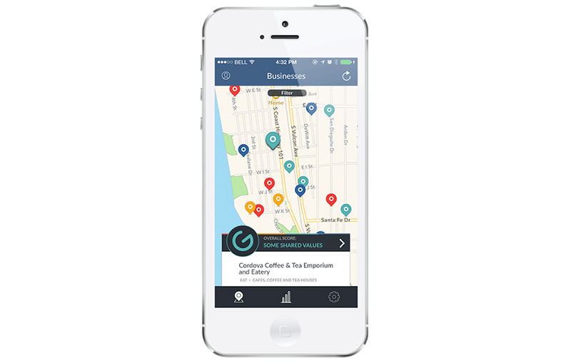

Heroku App Helps Consumers Vote with Their Dollars
Glia connects consumers to businesses who share their values.
Living a values-based lifestyle brings deeper meaning to life. As we widen our perspective from the personal sphere, we become aware of issues that impact our local, national, and global communities and strive to connect our values to initiatives that support social change. Today, people are more passionate than ever about the issues, causes, and beliefs that matter most to them, yet it is often hard to find ways of channeling this energy into effective action.
Shopping for a Higher Purpose
One of the most powerful daily actions we all perform in the world is shopping. How can we tie such a mundane activity to a higher purpose, and help drive social good? The founders of Glia wanted to help people do just that. They created an app that helps us find and support businesses that align with our social, political, and economic values, empowering us to make informed shopping decisions. Trying to find such businesses on our own, sifting through mountains of data online, can be a monumental task. Glia’s research team has done the hard work and have packaged the data into an easy-to-use reference tool.
To date, Glia has analyzed 200 of the largest nationwide consumer businesses, including restaurants, retail stores, and gas stations, and are adding more every day. They’ve scored each business based on 30 values that the company or its leadership have publicly shared, and mapped them to over 500,000 locations across the country. Users can locate a business nearest them and see in real-time how it’s values compares with their own, so they can support those that align, and avoid those that conflict.
Scaling Data and Dynos Together on Heroku
The app concept was inherently mobile. To support a high level of interactivity and beautiful visual design, the app also had to be native. Working with development partner Neon Roots, the Glia team used their Roostrap agile inception process to plan and build an iOS app running on Heroku. The app design leveraged the iPhone’s unique user interface support to create an elegant, and entertaining swipe/shake/tap app experience.
When designing the architecture of Glia, we needed to choose a robust, scalable platform that allowed us to deploy quickly and easily. As we’ve worked almost exclusively with Heroku for some years now, that was a natural choice.
Gabriel Osorio, Developer, Neon Roots
The admin app on the backend serves as both CMS and CRM tool, as well as provide analytics. Also running on Heroku, the app allows the team to view basic user info, manage content, and display or remove business data from the app based on the accuracy or completeness of the information. Glia researchers ingest a significant amount of business data on a monthly basis, so they needed a solution that would allow them to easily scale. With Heroku, they can increase dynos at any time to accommodate requirements as needed.
Heroku simplifies the inherent complexity of building and deploying an app. There’s no barrier to entry whatsoever.
Tahlia Sutton, Co-Founder & Head of Product, Glia
The admin app was built using Ruby on Rails connected to a Postgres database. They use Heroku add-ons SendGrid for email communications and Papertrail for log management, and they loop in third party mobile platforms Mixpanel for analytics and Factual to support the location-based aspect of their experience.
Even for a non technical person, it’s easy to see the benefits of the platform.
Tahlia Sutton, Co-Founder & Head of Product, Glia
The Glia team is working hard on further developing the app, focusing in particular on their data model. They are working with leading data scientists to make their business data easier to access and use, and plan to upgrade their schema in the near future. They are confident that Heroku will remain the best platform for them as they grow and evolve.
App Experience
Not only is the Glia app a handy shopping reference tool, but it’s also fun. Social issues can often be dry topic, but the app’s designers used gamification techniques to create an addictive and entertaining experience. Onboarding is a breeze, and creating a values-based user profile is highly visual and leverages native iOS interactivity. The user is presented with five circles representing values, which can then be dragged and dropped into the user profile. The user shakes the device, and five more values are displayed. Shake, drag, shake drag until all 30 values have been considered. An algorithm then produces a unique and highly personalized Glia score. The user can then see local businesses on a map and view a values comparison based on their Glia score — from a great match to misaligned.

Another fun element to the experience is a polling system that helps the user add depth to their value profile and Glia score. The app will present various issues or current events, and the user can then swipe right or left depending on their position. The user can also set up alerts based on nearby businesses that match their score. And because values are such a highly personal experience, the Glia team built the app and backend system with a focus on privacy and security.
With Glia, every shopping trip can make a statement.
More Stories


Have a question? Give our sales team a call: +1 (866) 278-1349.